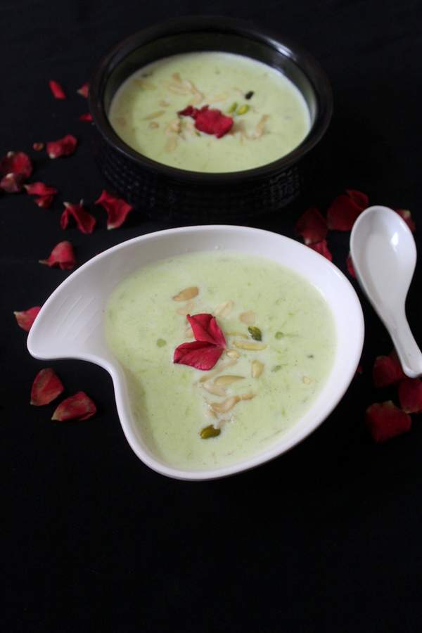

The ever so delicious Kaddu Ki Kheer

5-6 Servings 350 KCals
Prep time:4 Hours Cook time:1 Hour Total time:5 Hours
Ingredients:
- 2 litres full cream milk
- 1 cup bottlegourd/lauki/doodhi peeled and grated
- 3 tbsp sabudana/sago- soaked for 4-5 hours
- 3 tbsp basmati rice soaked for 1 hr, drained, dried and coarsely powdered
- 3 tbsp cashewnut paste 10 -12 cashews blanched and made into paste
- 50 gms khoya mix it with some milk without lumps
- 3 tbsp milkmaid/condensed milk
- 1 cup sugar/ as required
- ¾ tsp cardamom powder
- ¼ tsp green food color
- few drops of vanilla essence(optional)
- 3 tbsp blanched dry fruits finely sliced almonds, pistachios, cashews for garnishing
Procedure:
Cook the kaddu:
- Firstly, in a pan, add grated kaddu/bottlegourd.
- Into it, add 1 cup water and cook the kaddu until all the water is absorbed and until it gets soft.
Making of kheer:
- In a separate non stick pan/wok, add milk and bring it to a boil.
- Stir it for 5-10 minutes on low flame.
- Add cooked bottlegourd/kaddu into the milk.
- Stir and cook for 5 minutes on low flame.
- Add soaked sago/sabudana, mix and keep stirring and cook for 5 minutes.
- Add basmati rice flour, mix, keep stirring for another 5 minutes.
- Add cashewnut paste, mix and stir for 5 minutes.
- Add milkmaid and mix it well.
- Add khoya mixed with milk, mix and cook by stirring for few minutes.
- Add sugar as per requirement, mix and cook for another 5 minutes.
- Add cardamom powder, green food color, mix well and stir well.
- Cook for 5 minutes on low flame.
- Chill the dessert in refrigerator for few hours.
- Garnish with sliced dry fruits and serve.